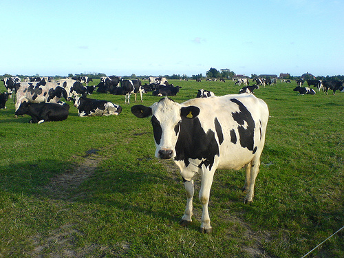

Tuesday, July the 1st, 2008
back to: title, date or indexes
An exciting letter arrives from OutaSpaceman:
I don't know why but, while researching British Seagull outboard motors, I thought of Hooting Yard. Then, yesterday, when I was out on my velocipede (which is named Potato), I passed a field of cows, and stopped to have a chat with them. As I declaimed, at length, on my conviction that they should rise up and cast off their collective yokes of oppression, I failed to notice a family group walking along the path behind me. They began to move much more quickly in the opposite direction.
Clearly the family had not read Dobson's pamphlet How To Conduct Yourself When Encountering A Cyclist Speaking With Cows In A Field (out of print).
OutaSpaceman enclosed a delightful photograph of the cows he met:
